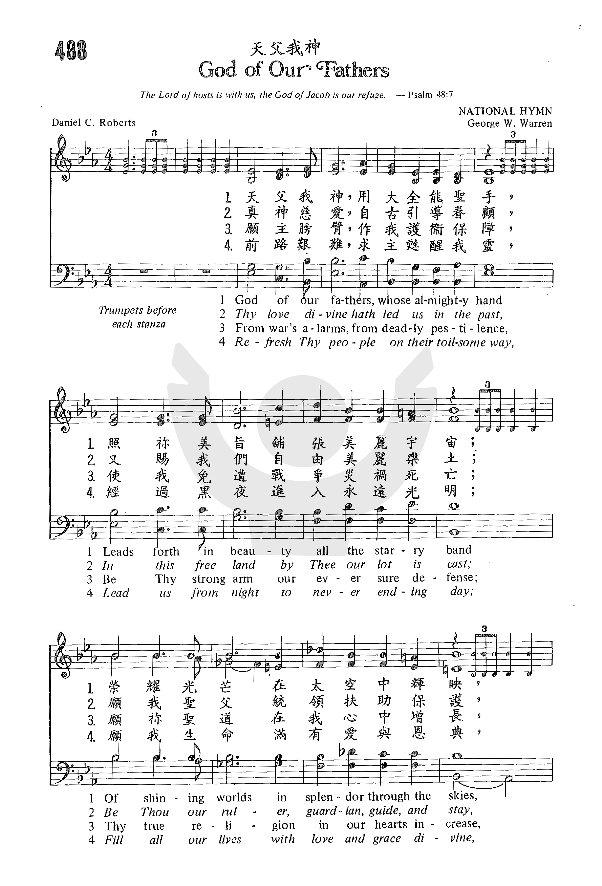
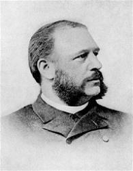
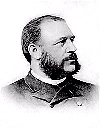

(請點耳機收聽)
(請點耳機收聽)這首聖詩是紀念美國獨立宣言一百週年的作品。
| 簡介 God of Our Fathers, Whose Almighty Hand |
| This hymn puts God first, and is
constantly addressed to Him as a prayer for the nation, without
reference to American superiority. The second and third stanzas allude
to a nation's need for God's law and guidance to maintain peace..
Christians too may sing this anthem, using it to recognize the national
association we have on earth but remembering that the practice of "true
religion" (st. 3) transcends earthly loyalties and promotes citizenship
in the kingdom of heaven. NATIONAL HYMN, the tune to which this text is sung, was written by George W. Warren in 1892. One popular feature of this tune is the trumpet fanfares at the beginning of each short phrase. In the original publication of this tune, the first phrase was indicated “Voices alone,” with the organ joining after the second fanfare. This hymn should be sung in harmony at a moderately slow tempo, with full accompaniment. |
God of our fathers, Whose almighty hand
|
【萬代之神】 詩集：世紀頌讚，32 |
| 1 God of the ages, whose almighty hand leads forth in beauty all the starry band of shining worlds in splendor through the skies, our grateful songs before thy throne arise.
|
====
先聖之神，你用全能聖手，造出星群，鋪張美麗宇宙；
天父慈愛，昔曾引導看顧，賜給我們自由美麗樂土；
脫離戰禍，脫離病毒災殃，藉你聖臂永作我們保障；
求主甦醒艱辛途中百姓，離開黑夜，導人永遠光明；
|
|

|
|
http://www.hymncompanions.org/Jul/04/stream.php
萬代之神，用祢全能聖手，美化穹蒼，鋪張錦鏽宇宙；
燦爛輝煌，日月星光紛呈，敬向寶座，獻上感恩歌聲。
真神慈愛，歷代引導眷顧，在此樂土，安享自由幸福；
願主統領，引導護守安穩，祢言祢道，是我所法所遵。
願祢聖臂，永作我眾護衛，免遭災禍，脫離戰爭，兇危；
願祢聖道，在眾心中滋長，祢的良善，使我眾享安康。
道路艱難，求主甦祢百姓，從此黑暗，導進永遠光明；
使我生活，蒙主恩愛充滿，頌讚、榮耀歸主直到永遠。
(請點耳機收聽)
這首聖詩是紀念美國獨立宣言一百週年的作品。
1876年佛蒙特州布蘭登市居民籌備慶祝獨立百年紀念大會，擬將當年歷史背景人物由孩童扮演，重溫舊事，居民發覺大家都不清楚「獨立宣言」內容，想到當年多少人為維護憲法而犧牲生命，不禁慚愧，回家後紛紛翻開歷史書重讀一遍，愛國之心油然而生。
1876年六月中旬，籌備委員會主席拜訪羅柏志（Daniel Crane
Roberts,1841-1907），請他為大會作一首新詩，大會希望由牧師來創作一首有宗教性的愛國詩歌，來配合這慶典。

羅柏志在聖詩集中找出了一首俄國聖詩「全能的神」（God the Omnipotent）的曲調，寫了這首四行各有十音節的詩，描繪神是宇宙的創造者，祂的權能可維護、引導這國家。
這首詩的
第一節：強調神的權威。
第二節：祈求神引導國家的未來。
第三節：求主庇護，眾民安康。
第四節：在主愛中，永享光明。
大會的主席聽了這首詩後，建議以吹號為前奏，使之更為雄壯。
這首原本祗是為獨立百週年慶典所用的歌，後被許多教會引用。 有的作詩班列隊進入教堂之歌，有的作禮拜開始之歌，也有大音樂家在禮拜獻唱；因此對講員形成喧賓奪主之勢。
十六年後，聖公會聖詩重編時，請紐約聖多馬教堂的司琴華倫（George William Warren, 1828-1902）另配一曲以號角聲為開始。
華倫的譜更受歡迎，歌詞和旋律中充滿了愛國的情操。
羅柏志出生在紐約長島，美國內戰時曾參加俄亥俄州志願兵團。 1866年，他被聖公會按牧，初在佛蒙特州布蘭登市牧會，後在新罕布夏州聖保羅教堂牧會將近十年。
他擔任新罕布夏州歷史會會長多年，深獲各界褒獎。 Norwick大學為表揚其成就，贈予神學博士學位。
中英文聖詩集參考
英文歌名 God
of Our Fathers
頌主新歌 72
頌主新歌(中英雙語) 72
教會聖詩 488
新聖詩 12
歡欣讚美 809
聖詩 20
讚美 12
世紀讚頌 32
頌主聖詩 517
青年聖歌I 5
http://www.xueshengshi.com/?p=4885
凡称为我名下的人，是我为自己的荣耀创造的， 是我所作成，所造作的。（赛 43:7）
神对于万有的关系有三种：一是创造万有，二是保守万有，三是治理万有。为何神要创造万有，根据圣经，至少有四个目的：
神创造之后，对于万有，并非袖手旁观，任其自生自灭，及时时看顾与保守。例如，造人之后，在古时时常拯救祂的百姓，到了日期满足，就差遣基督降世。神在自然界中保守五谷，生之长之，出日吹风下雨。宇宙运行按其秩序规律，都足见神的保守（尼 9:6）。
保守是消极工作，统治是积极的工作。圣经中多处经文说到神掌管万有。对于自然界、物理现象、动植物、人生及万国，无不施其「总裁」之权，执行其统治之工（参：诗 102:19，伯 37 至 41 章，加 1:15，太 10:29，诗 22:28 等）。
神，超乎万有之中，也住在万有之内，愿荣耀，威严，能力，权柄都归于祂！[dropdown_box expand_text=”全文” show_more=”显示” show_less=”隐藏” start=”hide”]这首「天父我神」自1876年问世以来，逐渐被更多人喜爱，今天大部份圣诗集都包括该诗。作者系美国圣公会牧师Daniel C. Robert。
本诗原是为纪念美国独立一百周年之庆而作，第一次是在该年七月四日献唱，为表扬其成就，在其离世之前，Norwich 大学颁赠予神学博士学位，并获各界的褒奖。
这首诗表达了天父对这个「以基督立国」之美国的引导、保守，并需要倚靠祂来面对将来的挑战。当然，它也适用于任何人、任何国家。
1 天父我神，用大全能圣手，照祢美旨铺张美丽宇宙；
荣耀光芒在太空中辉映，敬向宝座献上感恩歌声。
2 眞神慈爱，自古引导眷顾，又赐我们自由美丽乐土；
愿我圣父统领扶助保护，祢言祢道作我律法道路。
3 愿主膀臂，作我护卫保障，使我免遭战争灾祸死亡；
愿你圣道在我心中增长，祢的良善使我永享安康。
4 前路艰难，求主苏醒我灵，经过黑夜进入永远光明；
愿我生命满有爱与恩典，荣耀颂赞归神直到永远！
＊只要一心兴神同行，那么顺服遵命就一点也不难了！ ── 约翰达
https://hymnary.org/text/god_of_our_fathers_whose_almighty_hand
Scripture References:
st. 3 = Ps. 46:1
Daniel C. Roberts (b. Bridgehampton, Long Island, NY, 1841; d. Concord, NH, 1907) wrote this patriotic hymn in 1876 for July 4 centennial celebrations in Brandon, Vermont, where he was rector at St. Thomas Episcopal Church. Originally entitled "God of Our Fathers," this text was later chosen as the theme hymn for the centennial celebration of the adoption of the United States Constitution. It was published in the Protestant Episcopal Hymnal of 1892.
Educated at Kenyon College, Gambier, Ohio, Roberts served in the union army during the Civil War. He was ordained in the Episcopal Church as a priest in 1866 and ministered to several congregations in Vermont and Massachusetts. In 1878 he began a ministry at St. Paul Church in Concord, New Hampshire, that lasted for twenty-three years. For many years president of the New Hampshire State Historical Society, Roberts once wrote, "I remain a country parson, known only within my small world," but his hymn "God of Our Fathers" brought him widespread recognition.
Unlike many other nationalist hymns, this text keeps our focus on God. This is a Go who created the universe, who leads and governs his people, who serves as our protector, and who refreshes his people with divine love. Presumably the text referred originally to white Anglo-Saxons, but in its present form it is fitting for all citizens and residents of any country. Christians too may sing this anthem, using it to recognize the national association we have on earth but remembering that the practice of "true religion" (st. 3) transcends earthly loyalties and promotes citizenship in the kingdom of heaven.
Liturgical Use:
Worship that focuses on God's reign over the nations; civic celebrations.
--Psalter Hymnal Handbook, 1987
Many American patriotic hymns extol the beauty and worth of the United States first, and treat God almost as an afterthought, which makes it difficult for some Christians to be comfortable singing them in the context of a worship service. This hymn puts God first, and is constantly addressed to Him as a prayer for the nation, without reference to American superiority. The second and third stanzas allude to a nation's need for God's law and guidance to maintain peace.
The year 1876 was the centennial of the United States’ Declaration of Independence, which was the occasion for which this text was written. Daniel C. Roberts, an Episcopalian rector in Vermont, was the author. It was first sung in St. Thomas Episcopal Church in Brandon, Vermont, to the tune RUSSIAN HYMN. Roberts submitted his text to the revision of the hymnal of the Protestant Episcopal Church in 1892, where it was first published.
This hymn has four stanzas. The only notable alteration made to this text is that sometimes the opening line is changed from “God of Our Fathers” to “God of the Ages” for gender inclusivity.
NATIONAL HYMN, the tune to which this text is sung, was written by George W. Warren in 1892. It was first published in Arthur H. Messiter's The Hymnal Revised and Enlarged in 1893. One popular feature of this tune is the trumpet fanfares at the beginning of each short phrase. In the original publication of this tune, the first phrase was indicated “Voices alone,” with the organ joining after the second fanfare. This hymn should be sung in harmony at a moderately slow tempo, with full accompaniment.
This hymn is usually treated as an American patriotic hymn, which it was originally intended to be. In this use, it is sometimes combined with other patriotic hymns, such as in “Patriot’s Medley” for brass sextet, which combines “God of the Ages,” “America the Beautiful,” and “Battle Hymn of the Republic.” However, this text is not inherently American, so it can also be used by any nation as a prayer for God’s guidance. “God of All Ages, Whose Almighty Hand” is a choral setting in which the standard opening fanfare is expanded to include the choir and is repeated at the end. Brass and percussion are optional, but with this hymn, the trumpets are expected on the fanfares. This setting is also included in the global prayer service “Prayers for the Nations.” A simpler way to augment this grand hymn tune is with a brass quartet setting of “NATIONAL HYMN” that is designed to complement the standard hymnal setting for congregational singing.
Tiffany Shomsky,
Hymnary.org
https://www.umcdiscipleship.org/resources/history-of-hymns-god-of-the-ages
"God of the Ages"
Daniel C. Roberts
The UM Hymnal, No. 698
Daniel C. Roberts
God of the ages whose almighty hand
Leads forth in beauty all the starry band
Of shining worlds in splendor through the skies,
Our grateful songs before thy throne arise.
“God of the Ages” (originally “God of Our Fathers”), its author’s one claim to
literary fame, was written for a small rural parish in Brandon, Vt., for the
nation’s centennial celebration in 1876.
Daniel Crane Roberts (1841-1907) was a New Englander who served as a private in
the 84th Ohio Volunteers during the Civil War. Following the war, Roberts was
ordained a deacon and then a priest in the Episcopal Church. His parishes were
in Vermont and Massachusetts, and Concord, N.H., where he served St. Paul’s
Church for 29 years.

This hymn’s stirring lyrics and majestic tune represent, albeit subtly, the
common 19th-century assumption of Manifest Destiny: God will lead us from the
war and pestilence of our earlier captivity to the freedom and light of peace.
In his Companion to The UM Hymnal Carlton Young notes several changes made in
the original text as the Hymnal Revision Committee, following its own
guidelines, “attempted to reduce where possible the predominance of masculine
pronouns and images.”
In 1901, Roberts modestly wrote, “I remain a country parson, known only within
my own small world.” In reference to his one significant literary work, he
noted, “My little hymn has thus had a very flattering official recognition. But
that which would really gladden my heart, popular recognition, it has not
received.” Before his death in 1907 he was awarded several honors including the
Doctor of Divinity by Norwich University.
Dr. Hawn is professor of sacred music at Perkins School of Theology.
.png) |
|
|
|
|
| 作詞 | 瓦西里·茹可夫斯基 |
|---|---|
| 作曲 | 阿列克謝·利沃夫 |
| 採用 | 1833年 |
| 廢止 | 1917年3月15日 |
| 音樂試聽 | |
|
|
|
|
|
俄語維基文庫中與本條目相關的原始文獻： 天佑沙皇 |
|
俄羅斯國歌歷史 |
|
|---|---|
| 1791 - 1816 | 勝利的驚雷，響起來吧！ |
| 1816 - 1833 | 俄羅斯人的祈禱 |
| 1833 - 1917 | 上帝，保佑沙皇！ |
| 1917 | 工人馬賽曲 |
|
1918 - 1922 1922 - 1944 |
國際歌 |
|
1944 - 1991 1944 - 1953 1953 - 1977 1977 - 1991 |
牢不可破的聯盟 原歌詞 無歌詞 修訂歌詞 |
| 1990 - 2000 | 愛國歌 |
| 2000 - | 俄羅斯聯邦國歌 |
《上帝，保佑沙皇！》（俄語：Боже, Царя храни!，拉丁轉寫：Bozhe, Tsarya khrani!）是俄羅斯帝國第三首國歌，於1833年至1917年3月15日期間使用。
《天佑沙皇》是從一場在1833年的徵樂比賽中選出，由小提琴家阿列克謝·利沃夫作曲，瓦西里·安德烈耶維奇·茹科夫斯基填詞。在1917年二月革命爆發，3月15日俄羅斯帝國傾覆以前，一直是俄羅斯的國歌。[1]帝國滅亡之後由《工人馬賽曲》取代並成為臨時政府非正式國歌，直至十月革命爆發，臨時政府被布爾什維克推翻為止。
自從《天佑沙皇》成為國歌以後，有很多俄羅斯作曲家都有採用此歌曲主旋律來作曲，最著名的例子包括彼得·伊里奇·柴可夫斯基的《1812序曲》、《斯拉夫進行曲》以及丹麥國歌序曲。[2]但在蘇聯時期，《1812序曲》及《斯拉夫進行曲》中的《天佑沙皇》部分被其他歌曲所代替。[3]
1998年，俄羅斯作曲家、蘇聯時期著名搖滾樂手亞歷山大·圭蒂斯基曾提倡再次使用《天佑沙皇》成為俄羅斯國歌，但其歌詞並非是原本茹可夫斯基的版本。
1842年，英國作家亨利·卓萊將《天佑沙皇》改編並填上新詞，定名為《全能全權之神》（God, the Omnipotent!），並以《俄羅斯詩歌》之名義，在19及20世紀的詩歌集內發布。[4][5]《俄羅斯詩歌》的曲調至今仍收錄在部份英語教會詩歌集內，包括聯合衛理公會詩歌集、美國長老會詩歌集、美國路德會崇拜聖詩集及美國聖公會的《1982聖詩集》（The Hymnal 1982）的〈俄羅斯章〉內。[6]
《天佑沙皇》的旋律亦被應用在美國部份院校的校歌及制服團體的官方歌曲，並填上新詞。包括賓夕法尼亞大學校歌《歡呼，賓夕法尼亞！》（Hail, Pennsylvania!）、麥卡萊斯特學院的《親愛的老麥卡萊斯特》（Dear Old Macalester）、美國童軍聖劍盟的官方歌曲、瑪麗昂泰伯學院校歌及奧勒岡州波特蘭格蘭特高中校歌等。
由莫里斯·賈爾配樂的1965年電影《齊瓦哥醫生》曾多次採用《天佑沙皇》歌曲，尤其在序幕部份。[來源請求]
| 俄語 | 轉寫 | 譯文 | 另一種譯本 |
|---|---|---|---|
|
Боже, Царя храни! |
Bozhe, Tsarya khrani! |
上帝保佑沙皇！ |
神佑尊貴沙皇！ |

In 1981 an arrangement was made by Thomas Knox of the US Marine Band and performed at the Inauguration of President Ronal Reagan. “The ink on the new arrangement was barely dry on January 20, 1981, when the Marine Band performed the dramatic music between the oaths taken by the new Vice President and President. Knox’s inventive setting of the moving hymn was so brilliantly crafted that the work soon became a staple in the Marine Band’s repertoire and has been used for numerous significant national events over the past three decades, including the dedication of the Vietnam Veterans Memorial in 1982 and the Congressional Prayer Vigil held in the U.S. Capitol Rotunda the day after the terrorist attacks of September 11, 2001.”-Program Note by the United State Marine Band
We seek the wisdom and guidance of the Almighty to prepare us for our lives. Presidents have always invoked Gods name. Washington referred to “that Almighty Being,” Adams invoked “His providence,” and Jefferson spoke of “that Being in whose hands we are.”
“Both read the same Bible and pray to the same God, and each invokes his aid against the other. It may seem strange that any men should dare to ask a just God’s assistance in wringing their bread from the sweat of other men’s faces, but let us judge not, that we be not judged.”-Abraham Lincoln